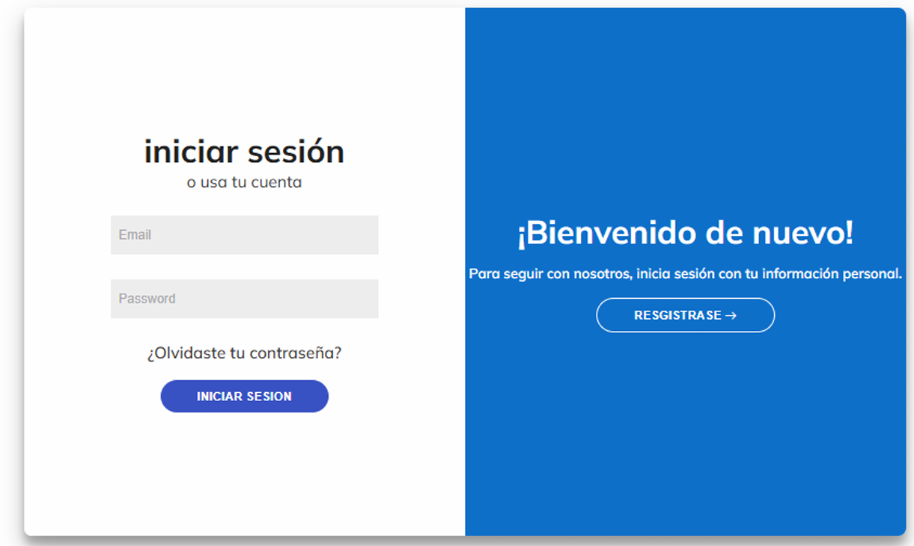
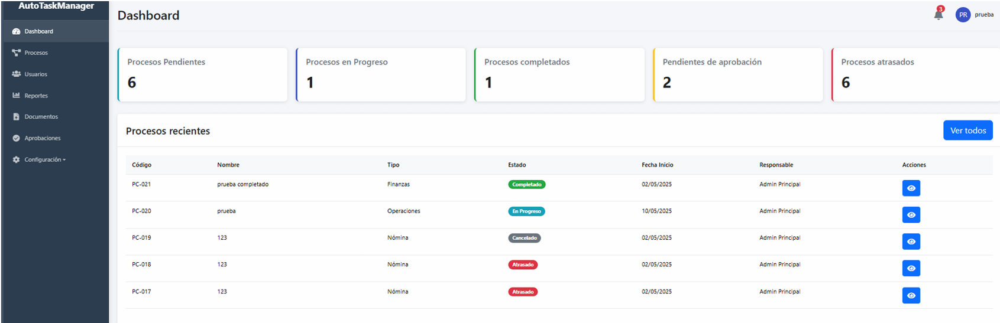
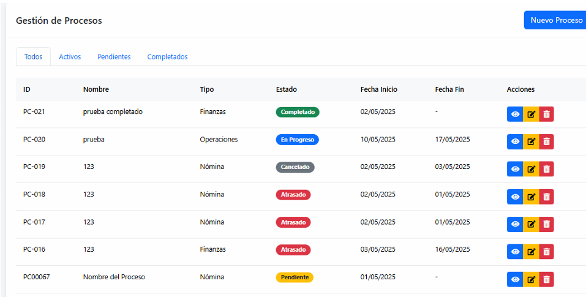
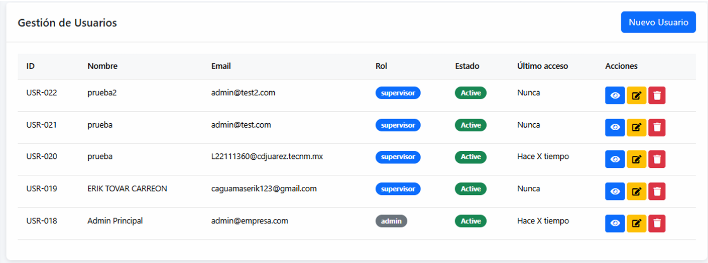
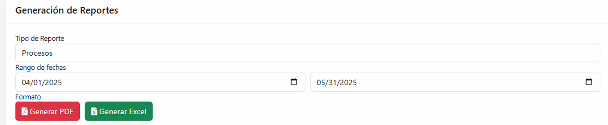
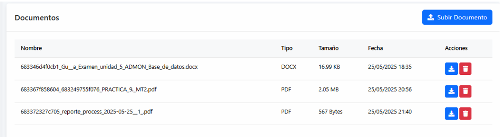
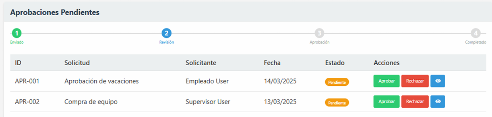
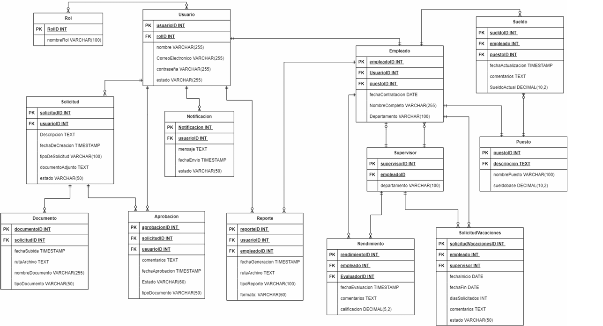

Esta aplicación web fue diseñada para automatizar y optimizar los procesos administrativos de una organización. Permite gestionar usuarios, procesos, documentos y aprobaciones de manera centralizada, mejorando la eficiencia y reduciendo tiempos de respuesta.
El sistema cuenta con un módulo de autenticación, un dashboard con indicadores clave, gestión de procesos, administración de usuarios, generación de reportes en Excel y un flujo de aprobación de documentos. Todo respaldado por una base de datos relacional.
La interfaz es responsiva y amigable, pensada para ser utilizada por personal administrativo sin conocimientos técnicos avanzados.







